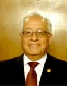
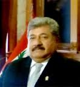

MISIÓN
La Universidad Nacional de San Agustín es una institución dedicada a la formación integral de académicos y profesionales; con capacidad de investigar, crear y difundir conocimientos; para contribuir a la preservación del medio ambiente, al crecimiento y el desarrollo social, en condiciones de equidad, seguridad y justicia.

VISIÓN
Ser una Universidad altamente creativa e innovadora, que practica la democracia y es participativa. Es de valoración y prestigio nacional e internacional, paradigma de difusión y creación de conocimientos. Estrechamente vinculada con su medio; forjadora de ciudadanos y profesionales de alta competencia; promotora de pensamiento crítico, generadora y plataforma de saber científico y tecnológico de la sociedad futura.
...
AUTORIDADES

RECTOR. Victor Linares Guaco
Nacimiento: 16 de septiembre de 1948
Estudios: Educación Primaria: Escuela 969 de Yarabamba
Educación Secundaria: Colegio Nacional de Independencia Americana
Educación Superior: Universidad Nacional de San Agustín
Grados y Títulos: Bachiller en Ciencias de la Educación en la Universidad Nacional de San Agustín
Profesor y Licenciado en Educación en la Universidad Nacional de San Agustín
Doctor en Educación por la Universidad Nacional de San Agustín
Experiencia Profesional:
Profesor de la Gran Unidad Escolar Mariano Melgar 1969-1986
Profesor de la Escuela Normal Superior de Varones San Juan Bautista de la Salle 1972-73
Profesor de la Universidad Nacional de San Agustín desde 1974 hasta la fecha.
Cargos Desempeñados:
Secretario General del Sindicato de Docentes de la UNSA
Regidor de la Municipalidad Provincial de Arequipa
Jefe del Departamento Académico de Educación binary options trading
Decano de la Facultad de Educación en 04 periodos
Director de la Unidad de Postgrado de la Facultad de Educación
Director de la Escuela de Postgrado de la Universidad Nacional de San Agustín
Vicerrector Académico de la Universidad Nacional de San Agustín.
Obras Publicadas:
Química Inorgánica (Texto de Educación Secundaria)
Química Orgánica (Texto de Educación Secundaria)
Métodos y Técnicas del Estudio Superior (Texto Universitario)
Educación para la Salud (Texto Universitario)
Orientación Educativa (Texto Universitario)
Evaluación Educativa (Texto Universitario)
Artículos, Folletos, Ensayos, etc.

VICERRECTOR ACADÉMICO. Howard Pinto Arana
Nacimiento: 16 de octubre de 1952
Estudios:
Estudios Primarios en el Instituto Experimental Nro. 5 del Cercado
Estudios Secundarios en el Colegio Nacional de Independencia Americana
Grados y Títulos:
Estudios Superiores de Ingeniero Agrónomo en la Universidad Nacional del Altiplano
Grado de Magister en Marketing en la Universidad Nacional de San Agustín
Grado de Doctor en Ingenieria de Producción aprobado por unanimidad
Cargos Desempeñados:
Director de la Escuela Profesional de Agronomía en dos periodos 1993-1995 / 1995-1997
Decano de la Facultad de Ciencias Biológicas y Agropecuarias 2008-2011
Jefe de la Oficina Universitaria de Producción de Bienes y Servicios UNSA 2004-2008
Jefe del Instituto del Deporte Universitario 2010-2012
Coordinador Académico del Ceprunsa 2012-2014
Presidente de Comisiones Temporales y Permanentes de la UNSA
Investigaciones Realizadas:
Ganador del Concurso Nacional con el Proyecto 248-2008 del CONCYTEC
Ganador del Concurso Nacional con el Proyecto 277-2009 del CONCYTEC
VICERRECTOR ADMINISTRATIVO. Luis Alfaro Casas
Nacimiento: 08 de Abril de 1954
Estudios:
Educación Primaria en diversos colegios del país
Educación Secundaria en el Colegio Salesianos Don Bosco de Arequipa
Grados y Títulos:
Ingeniero Industrial en la UNSA 1984
Magister en Ingenieria de Producción en Area de Inteligencia Artificial en la Universidad Federal de Santa
Catarina de Brasil 1955.
Doctor en Ingenieria de Producción por la Universidad Federal de Santa Catarina de Brasil 1999
Cargos Desempeñados:
Jefe de la Unidad de Procesamiento de Datos de INFOUNSA en 1980
Decano de la Facultad de Ingenieria de Producción y Servicios de la UNSA en dos Periodos
Director de la Unidad de Postgrado de la Facultad de Ing. De Producción y Servicios
Otros Cargos Desempeñados:
Investigador Principal de la Cátedra CONCYTEC en TIC’s para el desarrollo de Software Adjudicada a la
UNSA por concurso público
Jefe de Sistemas y Consultor de empresas privadas y públicas de Arequipa y Lima
Investigador de diversos Proyectos financiados por FINCYT, FIDECOM Y FONDECYT con Un registro de
Propiedad Intelectual obtenido y tres solicitudes de patentes
Ponente de eventos académicos y científicos en Brasil, Argentina, Chile, Bolivia, Perú, Ecuador y autor de 100 artículos de investigación científica en revistas indexadas
Autor de libros diversos en el área de Informática